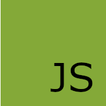
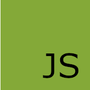

Możesz się zgłosić w każdym wieku
Nasi absolwenci to osoby świeżo po maturze, studenci, pracujący oraz seniorzy. Niezależnie od wieku wprowadzimy Cię w świat IT i pomożemy Ci swobodnie się po nim poruszać.
CZYM SĄ JĘZYKI PROGRAMOWANIA?
Języki programowania są to zbióry zasad syntaktycznych oraz semantycznych określających,
kiedy ciąg symboli tworzy program komputerowy oraz jakie obliczenia opisuje.
Innymi słowy, jest to narzędzie do formułowania programów dla komputerów.
Pomaga dokładnie określić, jakie zadania ma wykonać komputer.
Języki programowania mają różne możliwości i zastosowanie.
Najpopularniejsze języki programowania to m.in.: Java, Python,
C, C++, C#, Visual Basic, JavaScript, PHP, SQL. Istnieją ich jednak tysiące.
Tutaj nauczmy się podstowowo programować w HTML, CSS, JAVA SCRIPT, PHP.

 

HTML
CSS
JAVA SCRIPT
PHP
Wiemy jak skutecznie uczyć – robimy to już od 9 lat
Opracowaliśmy najbardziej efektywny model nauki. Na kursach trwających od 5 do 24 tygodni zdobywasz umiejętności niezbędne w pierwszej pracy. Niezależnie od doświadczenia możesz wejść do IT i rozpocząć swoją karierę.
Wspieramy w znalezieniu pracy po kursie
Opracowaliśmy najbardziej efektywny model nauki. Na kursach trwających od 5 do 24 tygodni zdobywasz umiejętności niezbędne w pierwszej pracy. Niezależnie od doświadczenia możesz wejść do IT i rozpocząć swoją karierę.
Dostosujemy się do Twoich potrzeb i możliwości
Dziennie lub weekendowo, stacjonarnie lub online. Ty wybierasz! Możesz też liczyć na wsparcie naszych mentorów i wykładowców. Jeśli uznasz, że to nie jest dla Ciebie, oddamy Ci pieniądze za niewykorzystane części kursu.
Co nas wyróżnia?
Kursy IT prowadzimy od lat i dzięki temu doświadczeniu wiemy, że praktyka i najwyższa jakość nauki są kluczowe!
Właśnie dlatego nasi wykładowcy to specjaliści w swojej dziedzinie.
Dlaczego kursy IT?
Zdobywając kompetencje z obszaru IT, odpowiadasz na potrzeby rynku. Firmy e-commerce oraz te świadczące usługi
online stanowiły bowiem 30% wszystkich organizacji szukających pracowników w pandemii.
Wiele ścieżek rozwoju
Do wyboru masz programowanie, testowanie, analiza danych, SEO, zarządzanie projektami i wiele innych. Niezależnie od Twoich mocnych stron, w IT znajdziesz coś dla siebie.
Wysokie zarobki
Jedną z wielu korzyści pracy w branży IT są wysokie zarobki, które stwarzają możliwość szybkiego osiągnięcia stabilizacji oraz życia na komfortowym poziomie.
Przyjazne środowisko pracy
W IT możesz pracować zdalnie i liczyć na elastyczne godziny pracy. To dlatego, że najważniejsze są efekty, a nie liczba godzin, które spędzisz za biurkiem.
Jakich języków nauczysz się kupując kurs?
Nauczysz sie HTML, CSS, JAVA SCRIPT, PHP
Co to jest HTML?
W prostych słowach, HTML to technologia, służąca do tworzenia stron internetowych. Nazwa to skrót od HyperText Markup Language, co po polsku oznacza hipertekstowy język znaczników. Gdyby rozbić tę nazwę na czynniki pierwsze, to składające się na nią słowa oznaczają po kolei: HyperText (hipertekst) – zwany jest też hiperłączem. To tekst zawierający odniesienia do innego tekstu lub strony, co pozwala za jednym kliknięciem myszy przejść do dowolnego miejsca w sieci. Markup (znacznik) – określany jest także jako tag. Używa się go do sterowania wyglądem strony i jej funkcjonalnościami. Za pomocą znaczników można np. zmienić kolor tła, wyboldować tekst czy wstawić grafikę. Language (język) – to najprostsza do zrozumienia część akronimu. Jak każdy język, HTML składa się z unikalnej składni i alfabetu. Warto zauważyć, że HTML nie jest typowym językiem programowania, jak np. JavaScript czy Python. Nie zawiera on w porównaniu do nich logiki programowania. Nie ma typowych instrukcji warunkowych. Nie może oceniać wyrażeń ani wykonywać żadnych obliczeń. Nie obsługuje zdarzeń ani nie wykonuje zadań. Nie można nim deklarować zmiennych i pisać funkcji. W żaden sposób nie modyfikuje też ani nie manipuluje danymi. HTML nie może pobierać danych wejściowych i generować danych wyjściowych. Zamiast tego, jak sama nazwa wskazuje, HTML jest językiem znaczników. Jego najważniejszą funkcją jest ustalenie (oznaczanie) struktury, układu i prezentacji zawartości strony internetowej (np. jej treści, nagłówków, obrazów). W połączeniu z innymi językami, takimi jak kaskadowe arkusze stylów (CSS) i JavaScript może tworzyć atrakcyjne wizualnie i interaktywne witryny. Uniwersalność i wszechstronność HTML sprawiają, że jest to najpopularniejszy język znaczników na świecie. Większość front-endowych programistów internetowych zaczyna od nauki kodowania właśnie w HTML.
Co to jest CSS?
CSS (ang. Cascading Style Sheets) to kaskadowe arkusze stylów. Za ich pomocą informuje się przeglądarkę internetową, jak ma wyświetlać elementy strony ustrukturyzowane w języku HTML – od rozmieszczenia obrazów i tekstu, po rozmiar czcionki i kolor tła. Podobnie jak HTML, CSS nie jest typowym językiem programowania. Nie wymaga znajomości zawiłych pojęć informatycznych, jak np. JavaScript, PHP czy Python. Zamiast tego, jak sama nazwa wskazuje, jest językiem â€arkuszy stylówâ€. To za ich pomocą programista stylizuje zawartość strony internetowej, zmieniając zwykły HTML, który wygląda jak mało atrakcyjny dokument Microsoft Word, w ciekawe i unikalne witryny. CSS daje bowiem możliwość tworzenia zaawansowanych układów graficznych, pozwala na zabawę kolorami, rodzajami czcionek i odstępami pomiędzy znakami czy dodawanie efektów do obrazów (np. obramowania, cieniowania).
Co to jest JAVA SCRIPT?
Razem z HTML i CSS JavaScript stanowi podstawowe narzędzie do tworzenia stron internetowych, jednak posiada również szersze zastosowania - jest używany w aplikacjach desktopowych i dokumentach PDF oraz w aplikacjach webowych po stronie serwera. JavaScript jest językiem wieloparadygmatowym - można w nim programować obiektowo, funkcyjnie i imperatywnie. Posiada API przystosowane do pracy z tekstami, tablicami, datami czy wyrażeniami regularnymi.
Co to jest PHP?
PHP jest skryptowym językiem programowania, wykorzystywanym najczęściej do tworzenia stron internetowych. Wykonywany jest po stronie serwera, co oznacza, że jest niewidoczny dla użytkowników. Pozwala na m.in. dynamiczne generowanie strony, tworzenie i modyfikowanie plików na serwerze, ograniczanie dostępu do danych podstron na twojej stronie, szyfrowanie danych czy stosowanie ciasteczek. Kod PHP może być przeplatany z kodem HTML, jednak nie jest to dobra praktyka. Najprostszym przykładem jego wykorzystania jest obsługa formularzy na stronach internetowych. PHP pozwala także na obsługę baz danych, co wymaga znajomości SQL – strukturalnego języka zapytań, który służy między innymi do tworzenia i modyfikowania baz danych, a także do wprowadzania i pobierania danych z baz danych.
Dla kogo są kursy IT?
Dla każdego! Liczy się Twoja motywacja. Nauka na kursie wymaga zaangażowania i systematyczności. Ale obserwowanie swoich postępów jest tego warte.
Nie potrzebujesz wykształcenia
Nie wymagamy również znajomości podstaw programowania czy doświadczenia w branży IT. Nasze kursy są prowadzone tak, aby każdy miał szansę zdobyć nowe umiejętności.
Możesz się zgłosić w każdym wieku
Nasi absolwenci to osoby świeżo po maturze, studenci, pracujący oraz seniorzy. Niezależnie od wieku wprowadzimy Cię w świat IT i pomożemy Ci swobodnie się po nim poruszać.
Twoje zobowiązania nie są problemem
Studiujesz, pracujesz, masz dzieci bądź inne obowiązki? Nie szkodzi - uczymy zdalnie i stacjonarnie, dziennie i weekendowo. Razem znajdziemy dla Ciebie najlepszą formę nauki.
Popularne kursy
HTML
Zostań programistą stron internetowych.
Naucz się programować logikę strony.
Z HTML masz styczność praktycznie codziennie,
gdy korzystasz z Instagrama, Facebooka lub YouTube.
Rozkład kursu ⇨ Weekendowy/Dzienny
Opcje kursu ⇨ OnlineStacjonarnie
Czas nauki ⇨ 396-638 godzin nauki
Cena ⇨ od 10 900 zł lub 273 zł/mies.
CSS
Zostań programistą stron internetowych.
Naucz się programować wygląd strony.
Z HTML i CSS masz możliwość zrobienia praktycznie wszystkiego.
Rozkład kursu ⇨ Weekendowy/Dzienny
Opcje kursu ⇨ Online/Stacjonarnie
Czas nauki ⇨ 396-638 godzin nauki
Cena ⇨ od 2 500 zł lub 273 zł/mies.
JAVA SCRIPT
Naucz się programować to, co widzisz w przeglądarce.
Poznaj jeden z najważniejszych języków programowania
na świecie, z którego korzystają takie firmy jak
Facebook czy PayPal.
Rozkład kursu ⇨ Dzienny/Weekendowy
Opcje kursu ⇨ Online/Stacjonarnie
Czas nauki ⇨ 396-638 godzin nauki
Cena ⇨ od 13 300 zł lub 273 zł/mies.
PHP
Kod PHP jest przetwarzany do kodu maszynowego,
W PHP najczęściej tworzone są systemy zarządzania treścią,
systemy forów dyskusyjnych, aplikacje pocztowe.
Rozkład kursu ⇨ Dzienny/Weekendowy
Opcje kursu ⇨ Online
Czas nauki ⇨ 396-838 godzin nauki
Cena ⇨ od 9 100 zł lub 273 zł/mies.
Jeśli tak to zapraszamy do kontaktu z nami
poniżej znajdziesz adres e-mail i numer telefonu.
KURS PROGRAMOWANIA
NASZA FIRMA:
• SKLEP • O NAS • FAQ • ZOSTAŃ WYKŁADOWCĄ • REGULAMIN SERWISU • WARUNKI UDZIALU W KONKURSACH • KONTAKT Z NAMI• 📠+48 660 064 638
• ✉️ kursprogramowaniapl@gmail.com